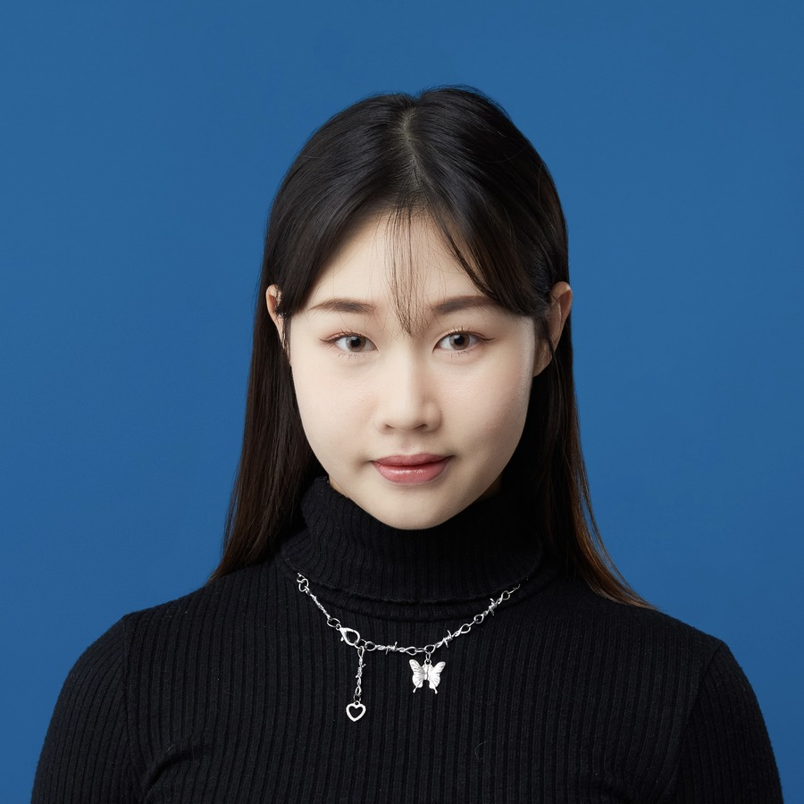

← → 換頁 · 點擊背景關閉← → to flip · click background to close
用 AI 與數據強化廣告策略，
把提案變成客戶買單的商業決策Sharpening ad strategy with AI and data — turning proposals into decisions clients buy into
5 年以上橫跨廣告行銷、策略規劃與商業開發經驗，擅長發掘市場機會、將想法轉化為可執行策略並轉換營收。具備跨部門整合、團隊管理與人才培育能力——無論為品牌、為組織、為自己，「發揮最大影響力」就是我的成就感來源。 5+ years across advertising, strategy, and business development. I'm good at spotting the opportunity others miss, turning it into a plan that ships, and turning that into revenue. I build teams, lead them, and grow the people on them — because making real impact is what I'm here for.

成熟穩重、自我要求高，溝通能力出色，凡事以解決問題為導向。Composed and driven, with sharp communication skills and a problem-solver's instinct in everything I take on.
Vivien 是一位成熟穩重且高度負責的工作者，面對挑戰不落入情緒，始終以「解決問題」為導向。具備「快速行動」與「持續突破」的精神，自我要求高，總能高效拆解任務並追求比上次更好的表現。同時心思細膩、善於換位思考，擁有出色的跨部門溝通能力，能消化各方需求並創造雙贏，是讓業務與執行團隊都感到極度安心可靠的優秀夥伴。 Vivien is a composed, highly accountable professional. She stays level-headed under pressure and keeps the focus on solving the problem. She moves fast, raises her own bar every time, and breaks work down and executes it efficiently. Thoughtful and quick to see other perspectives, she has the cross-functional communication skills to balance competing needs and land genuine win-wins — a partner both sales and delivery teams can rely on completely.
能力沒有問題，也能在面對問題時主動給出想法。覺得特別好的一點是，不會讓業務覺得是在「執行」，而是一起創造案例。Her skills are solid, and she proactively brings ideas when problems arise. What stands out most: she never makes sales feel like they're just "executing" — it feels like creating wins together.
Sales ManagerSales Manager
做別人不敢做的事，挑戰別人不敢挑戰的挑戰；即便失敗了也不必灰心，成功了卻可以得到更大的喝彩——這就是不能害怕做更大的夢的真諦。She does what others don't dare to and takes on the challenges others avoid. Fail and there's no need to be discouraged; succeed and the applause is all the greater — that's what it means to not be afraid to dream bigger.
Sales LeadSales Lead
溝通能力真的很棒，經常可以讓兩邊做事有效率，不會有延誤上片，或是腳本大修改的問題。Her communication is genuinely great — she keeps both sides moving efficiently, with no delayed uploads or major script rewrites.
Dcard Video · 短影音企劃Dcard Video · Short-Video Planner
在合作的過程中，對專案的問題和討論都能有效點出關鍵問題並快速解決，覺得 Vivien 是一個執行力跟責任感都很高的優秀夥伴！Throughout our collaboration she could pinpoint the key issue and resolve it fast. Vivien is an outstanding partner — high execution and a strong sense of ownership!
Brand DesignerBrand Designer
Vivien 是一個很可靠的夥伴，一起工作只要看到是他就會很安心！對工作很負責，也會貼心地考慮到很多面向，讓大家工作起來很舒服愉快；遇到需要討論的問題，也會先提供幾個方案讓大家討論，省下很多來回溝通的時間。Vivien is a reliable partner — just seeing she's on it puts everyone at ease. She's responsible and thoughtfully considers many angles, making work smooth and enjoyable. When something needs discussion, she offers a few options up front, saving a lot of back-and-forth.
Dcard Video · 經紀人Dcard Video · Talent Manager
Vivien 的簡報製作能力讓人印象深刻，具有豐富的畫面說服力；面對跨部門的主管階級夥伴，也能清楚傳遞需求，為對方建構出良好的合作想像空間。作為資深企劃，對各專案細節、公司背景都很有掌握度，詢問問題時總能快速獲得友善解答！Vivien's deck-making is impressive — visually persuasive. With cross-department managers she conveys needs clearly and paints a compelling picture of the collaboration. As a senior planner she has great command of project details and company background, and always gives quick, friendly answers!
Campaign PlannerCampaign Planner
建立 5 隻 AI Agent 優化提案、市場研究與數據分析流程，提升團隊專案交付效率與品質。
一條完整的「話題提案」工作流，為團隊在「打造話題」的過程中每一段缺口佈局。
I built 5 AI Agents to sharpen our proposal, market-research, and data-analysis workflow — raising both the speed and quality of what the team ships.
Together they form one complete "topic proposal" pipeline that covers every gap in turning an idea into buzz.
| 流程 / AgentStage / Agent | A1 熱門討論Hot Topics |
A2 受眾洞察Audience |
A3 趨勢預測Trend |
A4 案例分析Case Study |
A5 合作建議Pitch Match |
|---|---|---|---|---|---|
| 1. 趨勢/輿情掌握1. Trend & buzz | ✓ | ✓ | ✓ | · | ✓ |
| 2. 數據分析&洞察2. Data & insight | · | ✓ | ✓ | ✓ | ✓ |
| 3. 創意/策略發想3. Creative & strategy | · | ✓ | ✓ | · | ✓ |
| 4. 成功邏輯驗證4. Success validation | · | · | · | ✓ | ✓ |
| 5. 整合建議5. Integrated advice | ✓ | ✓ | ✓ | ✓ | ✓ |
不只「做出一份文件」，更展現我能定義方向、統籌資源、把數據轉成商業說服力的領導與規劃能力。Not just "producing a document" — proof that I can set direction, line up resources, and turn data into commercial persuasion.
Dcard 位居 Threads × Google × AI 三大數位旅程匯流點Dcard at the convergence of three digital journeys — Threads × Google × AI
校園銜接職場的橋樑，針對「職業人群」發展全新溝通The bridge from campus to career — built for working professionals
人群 × 場域 × 話題 → 聲量 → 行動 → 商業價值Audience × Space × Topic → buzz → action → commercial value
口碑・影音・活動・版位・加值・產業 6 大服務，30+ 產品與 KPI6 service lines · 30+ products, each with KPIs
於「母檔、週年慶、雙 11」促銷節點規劃並執行三檔跨品牌通案，精準溝通具明確購買意圖之受眾。Planned and ran three cross-brand campaigns at the big sales moments — anchor sale, anniversary, and Double 11 — reaching audiences with clear intent to buy.
以「Dcard 春季限定遊樂園」為主題，邀請用戶在母檔期間來到 Dcard 一起互動、同樂，透過將不同廣告專案包裝為遊樂園中各種設施之方式，使用戶自然接觸到品牌資訊。Themed as a "Dcard Spring Amusement Park," it invited users to play along during the anchor-sale period — dressing each ad format up as a park attraction so brand messages landed naturally.
以「讓 Dcard 帶你逛街」為溝通主軸，打造虛擬「Dcard 官方選品店」，使用戶可獲得豐富優惠資訊，完成自己的週年慶攻略圖鑑。Built around "Let Dcard take you shopping," it opened a virtual "Dcard Official Curated Store" where users gathered deals and built their own anniversary-sale game plan.
延續去年概念，重新舉辦「感謝祭」活動，以感謝用戶這一年來對 Dcard x 品牌合作的關注；並透過多種互動帶起原生討論，讓真實口碑互相推坑，協助用戶輕鬆找到最適合自己的好物。A return of the "Thanksgiving Fest," thanking users for a year of engaging with Dcard × brand collaborations. A mix of interactions sparked organic discussion and real word-of-mouth, helping people find the products that fit them.
把洞察轉成可執行、也讓客戶買單的決策。Turning insight into decisions that ship — and that clients buy into.
把一次性的工作做成可複用的流程與工具，讓團隊一起變快。Turning one-off work into reusable workflows and tools that make the whole team faster.
整合資源、推動專案落地，把策略真正做成成果。Lining up resources and driving projects through — turning strategy into results.
提案涉及客戶機密，以下僅呈現策略思路與我的角色，具體內容恕不公開。These proposals are under client confidentiality, so only the strategic thinking and my role are shown — specifics stay private.
擁有為 100+ 品牌提執案經驗，能主導專案推進，透過口碑、影音、實體活動等方式打造有力宣傳。I've pitched and delivered for 100+ brands, driving projects forward and building campaigns with real pull through word-of-mouth, video, and live events.